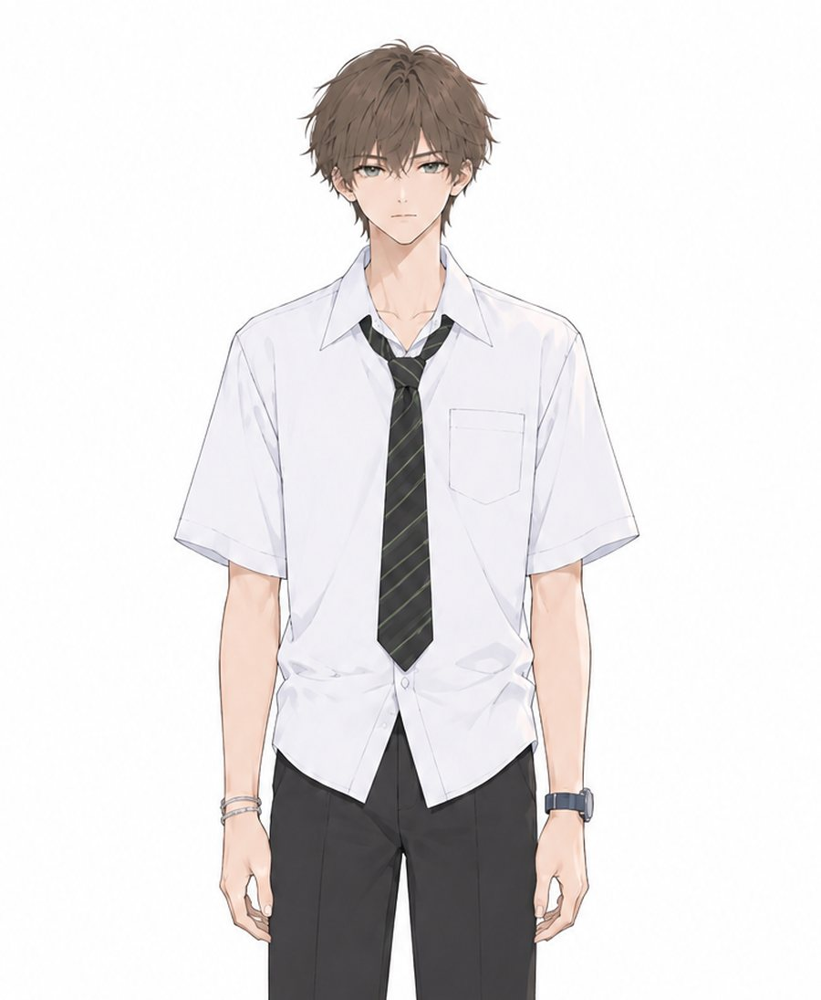
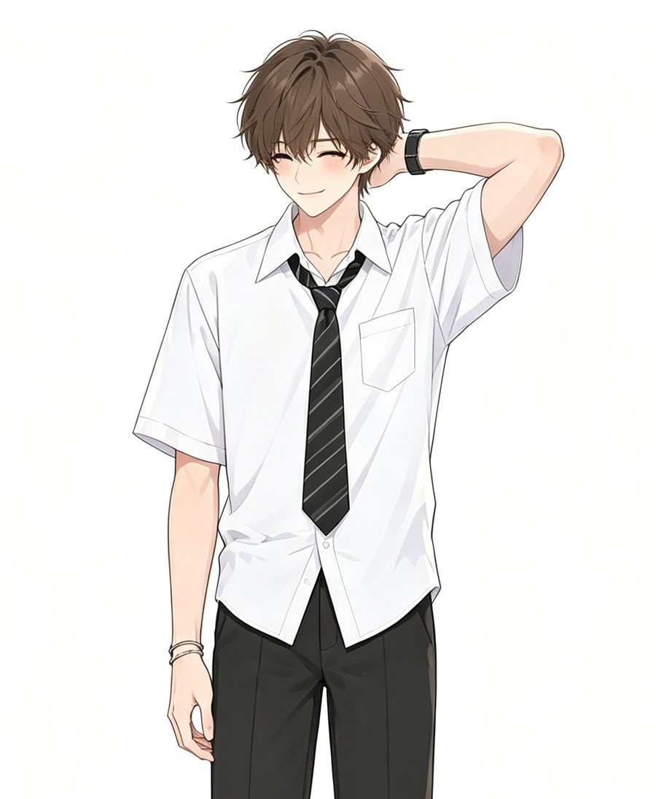
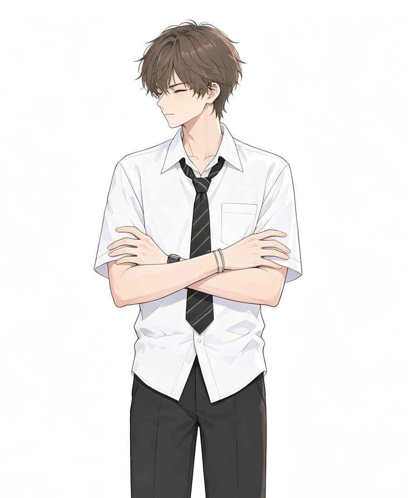

⌂
Sei
记录
⚙
Sei
Sei
ONLINE
想和你说说话……
见面
备忘录
一起听歌
购物
查手机
日常
外观
设置
‹
备忘录
提醒时间（可选）
保存
‹
一起听歌
收起
选一首歌，我们一起听。
告诉 Sei
选择音乐文件
‹
外观
雾蓝
暖米
薰衣草
‹
购物
收起
衣服
发型
‹
Sei 的手机
点开就能看到他的手机。
重新生成
‹
日常
今天 · 日本的季节
和 Sei 聊聊
御神签
每天可以抽一次。
抽签
纪念日
认识的第一天
添加
SEI-OS
点按屏幕跳过
Sei 怎么称呼你
DeepSeek API Key
今天的状态
普通日子
放假
调休补班
请假/休息
补充一句
只对今天有效，Sei 会据此关心你。
Key 只保存在这台设备的浏览器里，不会上传到别处。请不要把它发给任何人。
保存